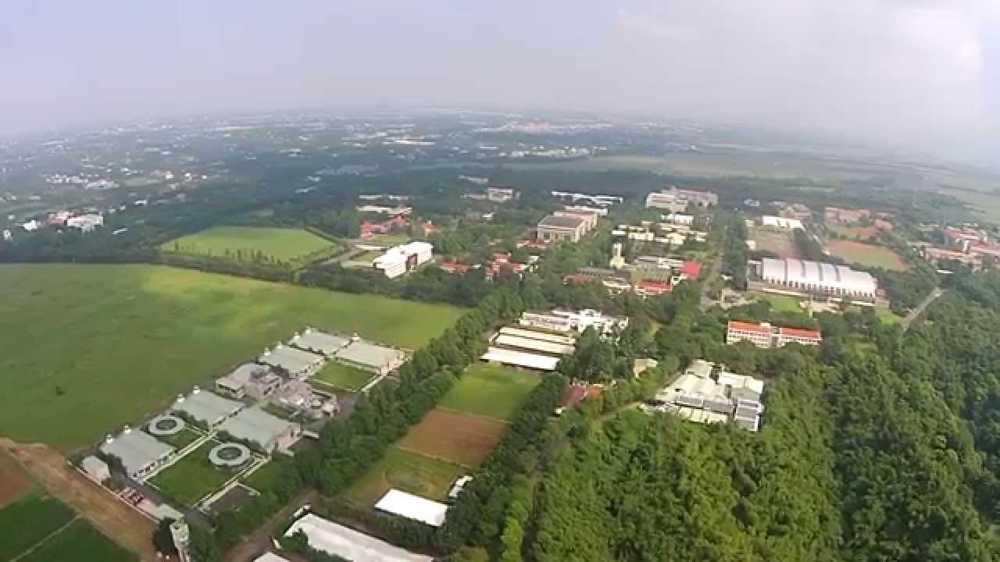

- 地理
-
屏科大位於屏東平原東界緩坡丘陵地，以東隔東港溪為地勢較高的丘陵與山地，屬中央山脈南段，其中北大武山海拔由130至3,092公尺，面積廣達47,000公頃，是台灣地區目前所保留面最大、林相最完整的天然林地。
-

-
氣候
-
學校位於北回歸線以南,屬於熱帶季風氣候. 氣溫全年溫差不大，三月底至十一月中氣候炎熱，十二月初至隔年三月中氣候較溫和。
夏季潮濕多雨，平均高溫30-33度, 低溫24-26度，冬季較乾燥，平均高溫24-27度，低溫16-19度。
冬季寒流南下時影響也較台灣其它地區甚小，平均溫度最多驟降3-4度，天氣晴朗時高溫則可能上升至28-30度。